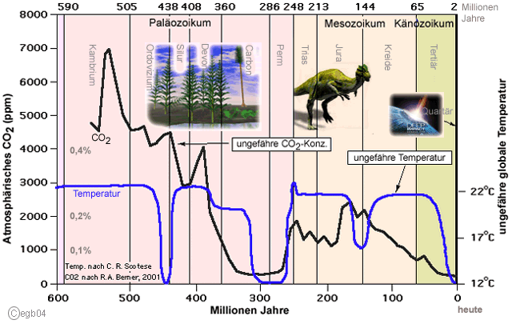
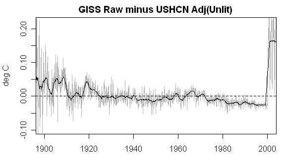
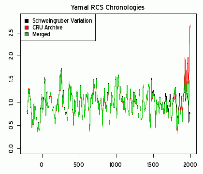

Wärmedämmung?
Wärmedämmung?
 Feuchte/Salz?
Feuchte/Salz?
 Heizung?
Heizung?
 Fenster schwitzen?
Fenster schwitzen?
 Schimmelpilz wuchert?
Schimmelpilz wuchert?
|
Was keiner wagt, das sollt ihr wagen, |
Wenn keiner ja sagt, sollt ihr's sagen, |
Wo alle loben, habt Bedenken, |
|
Walter Flex (6.7.1887 - 16.10.1917) |
 Friedrich Nietzsche (1844-1900):
Friedrich Nietzsche (1844-1900):Man kann einem Volk rasch die Augen öffnen, wenn man bei der Wahrnehmung, daß es sich im ganzen täuscht, ein Mittel findet, wodurch es genötigt wird, aufs einzelne einzugehen.
 Anläßlich der Vorbereitungen zu dem direkt nach der Bilderberger-Geheimkonferenz in Istanbul stattfindenen
G8-Treffen in Heiligendamm (welch scheinheiliger Ortsname für uns verdummt-verdammte Klimasünder!) Anfang
Juni 2007 warnte ausgerechnet mein oberfränkischer Abgeordneter des Deutschen Bundestags, Karl-Theodor
(gr. für Gottesgeschenk) Freiherr zu Guttenberg, damals Obmann der Unions-Bundestagsfraktion im Auswärtigen
Ausschuß des Bundestags, später CSU-Generalsekretär, Wirtschaftsminister, Verteidigungsminister und damit
CSU-Shootingstar, die Kanzlerin Frau Dr. rer. nat. (phys.) Angela Merkel, als ehem. Atomministerin unter Kohl eine der
vehementesten Verfechterin der CO2-Treibhaus-Lüge der Atompropaganda vor einem
"windelweichen Kompromißvorschlag", um den klimaschutzwiderspenstigen Präsidenten der Vereinigten
Staaten, George W. Bush jr. vielleicht doch noch zu zähmen. Und das, obwohl ich den sehr verehrten Baron aus dem
fränkischen Uradel seit Jahren liebevoll und fleißig mit all den wissenschaftlichen Widerlegungen der
widerlichen Klimamärchen versorge. Haste Töne? Sollten die kritischen Betrachtungen zum Bildungsniveau des
Landadels im 19. Jh. auch heute noch zutreffen? Oder verdirbt Politik tatsächlich den Charakter? Und schon bald
zeigt sich die Merkelsche Wirkung - der Präsident der imperialistischen Terrormacht USA, George W. Bush lädt
zur Klimakonferenz vom 27.-28. September 2007 nach Washington, um eine internationale Vereinbarung zum Kampf gegen den
Klimawandel zu erzielen, als Nachfolgeabkommen für das von ihr selbst mit durchgepeitschte unselige Kyoto-Protokoll.
Was herauskommt, wenn der für seine ungeheuerlichen Verbrechen nicht erst seit der Indianerausrottung
sowie Negerversklavung und -diskriminierung bekannte Weltherrscher USA und eine ehemalige moskautreue
DDR-Propagandistin die Strippen ziehen, dürfte jedem klar sein. Man muß also nicht gespannt sein.
Anläßlich der Vorbereitungen zu dem direkt nach der Bilderberger-Geheimkonferenz in Istanbul stattfindenen
G8-Treffen in Heiligendamm (welch scheinheiliger Ortsname für uns verdummt-verdammte Klimasünder!) Anfang
Juni 2007 warnte ausgerechnet mein oberfränkischer Abgeordneter des Deutschen Bundestags, Karl-Theodor
(gr. für Gottesgeschenk) Freiherr zu Guttenberg, damals Obmann der Unions-Bundestagsfraktion im Auswärtigen
Ausschuß des Bundestags, später CSU-Generalsekretär, Wirtschaftsminister, Verteidigungsminister und damit
CSU-Shootingstar, die Kanzlerin Frau Dr. rer. nat. (phys.) Angela Merkel, als ehem. Atomministerin unter Kohl eine der
vehementesten Verfechterin der CO2-Treibhaus-Lüge der Atompropaganda vor einem
"windelweichen Kompromißvorschlag", um den klimaschutzwiderspenstigen Präsidenten der Vereinigten
Staaten, George W. Bush jr. vielleicht doch noch zu zähmen. Und das, obwohl ich den sehr verehrten Baron aus dem
fränkischen Uradel seit Jahren liebevoll und fleißig mit all den wissenschaftlichen Widerlegungen der
widerlichen Klimamärchen versorge. Haste Töne? Sollten die kritischen Betrachtungen zum Bildungsniveau des
Landadels im 19. Jh. auch heute noch zutreffen? Oder verdirbt Politik tatsächlich den Charakter? Und schon bald
zeigt sich die Merkelsche Wirkung - der Präsident der imperialistischen Terrormacht USA, George W. Bush lädt
zur Klimakonferenz vom 27.-28. September 2007 nach Washington, um eine internationale Vereinbarung zum Kampf gegen den
Klimawandel zu erzielen, als Nachfolgeabkommen für das von ihr selbst mit durchgepeitschte unselige Kyoto-Protokoll.
Was herauskommt, wenn der für seine ungeheuerlichen Verbrechen nicht erst seit der Indianerausrottung
sowie Negerversklavung und -diskriminierung bekannte Weltherrscher USA und eine ehemalige moskautreue
DDR-Propagandistin die Strippen ziehen, dürfte jedem klar sein. Man muß also nicht gespannt sein.
Außerdem:


 Warum stürzen sich unsere ach so freien Medien nicht auf solche Ungeheuerlichkeiten, sondern lassen uns
wehrlos ausbluten? Für nix und nochmal nix???
Warum stürzen sich unsere ach so freien Medien nicht auf solche Ungeheuerlichkeiten, sondern lassen uns
wehrlos ausbluten? Für nix und nochmal nix???Er wäre höchstwahrscheinlich auch im Jahr 2009 am streng CO2-gläubigen "Ökumenischen Rat der Kirchen" kläglich gescheitert.


Empfohlene Links:
 <======== ZeitGeist 1/09: Kontra Ökobetrug
<======== ZeitGeist 1/09: Kontra Ökobetrug Das Skeptiker-Handbuch - Bildklick zum Download ========>
Das Skeptiker-Handbuch - Bildklick zum Download ========>